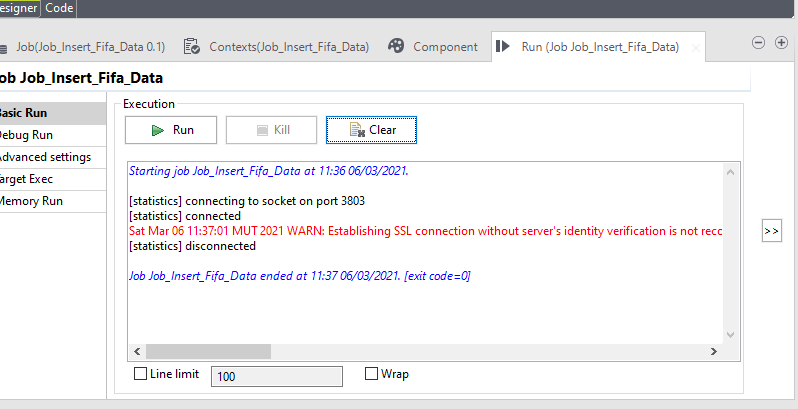

Talend Solutions
There are different type of Talend soultions listed below
- Talend Open Studio
- Talend Data Integration
- Talend ESB
- Talend Big Data
- Talend Fabric
There are different type of Talend soultions listed below
Talend provides you with a range of open source and subscription Studios you can use to create your projects and manage data of any type or volume.
Using the graphical User Interface and hundreds of pre-built components and connectors, you can design your Jobs with a drag-and-drop interface and native code generation.
The key capabilities of Talend Studio are accessible from different perspectives.
The availability of the perspectives depends on your license in the case of a local project, or on the type of your remote project.
Native Code
Better Collaboration
Faster Designing
Early Cleansing
Efficient Management
Easy Scalability
Real Time Statistics
A project is the highest physical structure for storing all different types of items. Once you launch your Talend Studio and before you start a Business Model, a data integration Job, a Route, or any other tasks, you need first create or import a project.
If we are opening the existing project in the workspace, we just have to choose the project and then click on finish
To create a new project, choose the option "Create a new project", then give the project a name and finally click on create
To import an existing project from another workspace or an exported project, choose option import an existing project, then browse to find the project and then click on import
Step 1 - Click on create Business Model
Step 2 - Give the business model a name
Step 3 - Drag and drop components from the palette, and then link them together.
Step 1 - Click on create new job.
Step 2 - Give the job a name and a purpose or description.
Step 3 - Drag and drop new components from palette and connect them. The image below shows us the input configuration to read a csv file.
Step 1 - Expand the metadata icon from the repository. Click on file delimiter and create file delimeter.
Step 2 - Give the file delimiter a name and a purpose or description.
Step 3 - Browse the delimited file and choose operating system (windows or linux)
Step 4 - Check File viwer and see if data is visible.
Step 5 - Configure the metadata. Choose the Field and row separator.
Step 6 - Set all datatypes for every field as string.
Step 7 - Finally give the metadata a name. Check the result in the screenshot added below:
If everything is good then click finish.
Step 1 - Check the source of the input. All datatypes are strings
Step 2 - Set output to correct columns name and datatypes.

Step 3 - Transform data (string to integer)
Step 4 - After Transformation
public static boolean ISNULL(Object variable) {
return variable == null;
}
public static boolean NOT(boolean expression) {
return !expression;
}
public static int isNull(Object value) {
if (value == null) {
return 1;
}
return 0;
}
public static String DOWNCASE(String string) {
return string == null ? null : string.toLowerCase();
}
public static String UPCASE(String string) {
return string == null ? null : string.toUpperCase();
}
Step 1 - Set configurations for mysql connection
Step 2 - Choose actions and operation type.
Step 1 - Click on the little play button on the basic run tab
Step 1 - Errors will appear in red in console.
Step 2 - Read the error or warning and then find a solution
Step 3 - Application of solution and run again
Step 4 - Results